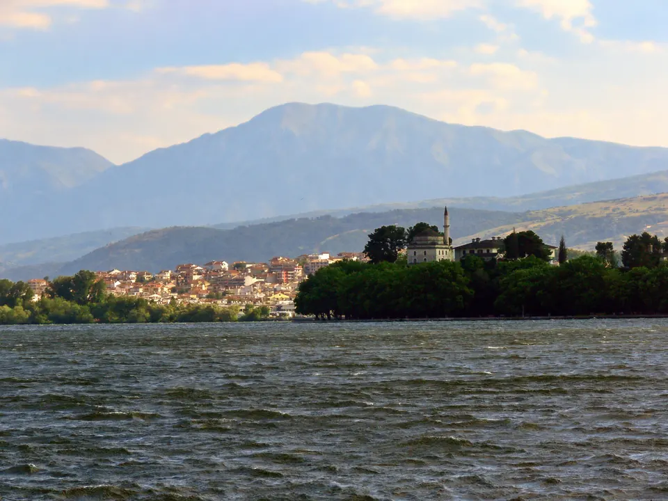
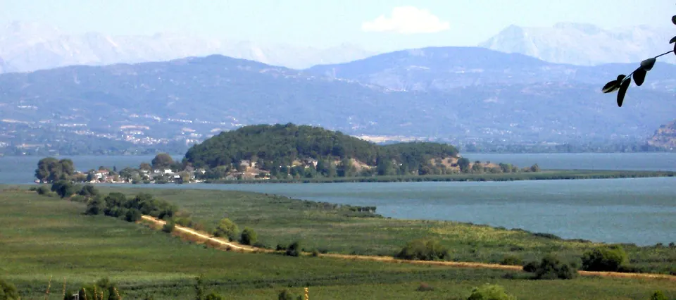
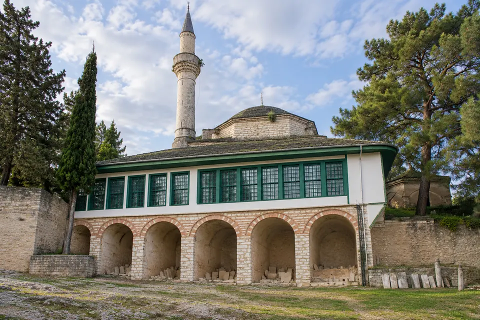
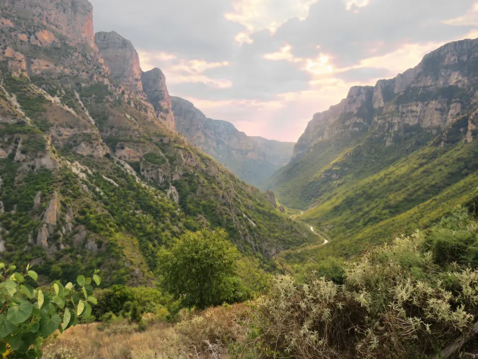
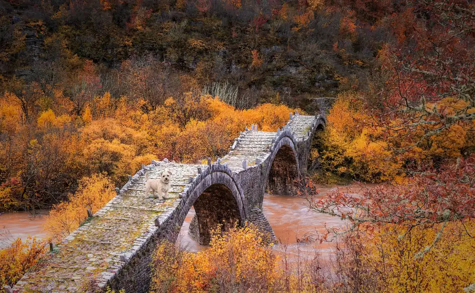
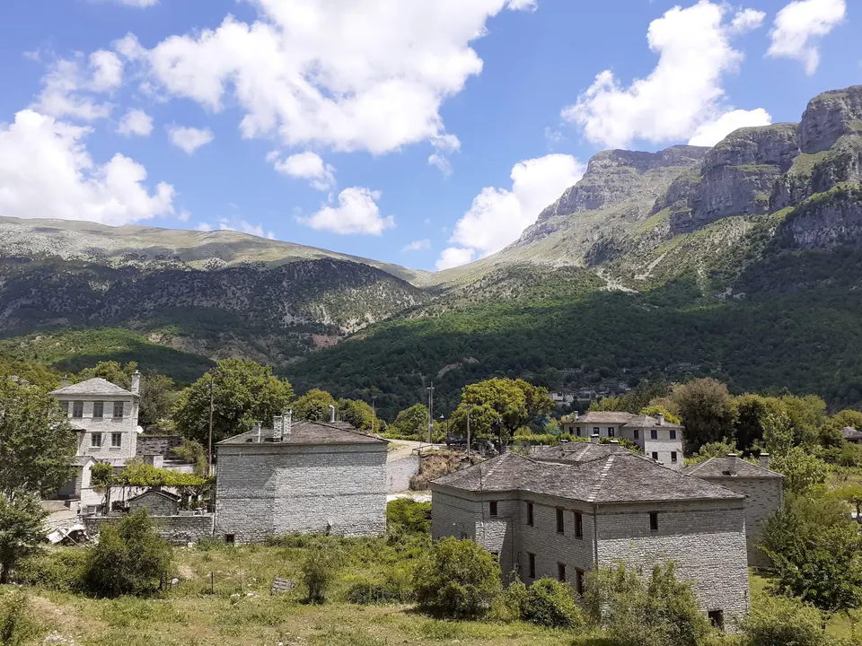
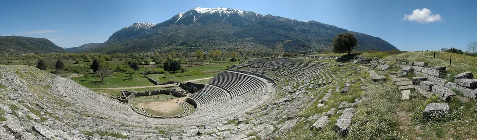
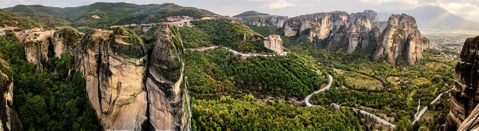
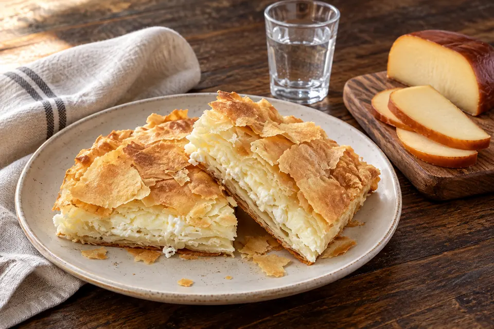

Ioannina
Lakefront Life and the Mountains of Epirus
Explore the Town ↓
Image & Source Notes ↗Life in Ioannina
Ioannina offers lakefront walks, a historic center and the mountains of Epirus. It is a mainland alternative to the islands, with university life and substantial medical services.
Ioannina is a university city beside Lake Pamvotida, with an airport, motorway access and the Zagori cultural landscape nearby.
Ioannina makes a strong practical case: full year-round services, university-hospital care and Zone I, the lowest band of the Greek Seismic Code (EAK).
The low, closed basin has official flood mapping, and winters are cold and wet. Check drainage, basement condition and the Krya-spring water supply.
- King Pyrros Airport is a domestic gateway, mainly to Athens.
- The Egnatia Odos motorway gives mainland road access, and Igoumenitsa has car ferries to Italy.
- Check live schedules with the Hellenic Civil Aviation Authority (HCAA), the airlines and the ferry operators.
- Region / Unit
- Epirus · Regional Unit of Ioannina · Δήμος Ιωαννιτών, the most urbanized municipality in Epirus, holding about a third of its people
- Population
- City 64,896 · municipality 113,978 · regional unit 160,773 (a rival 163,044 circulates; the census figure is 160,773)
- Setting
- A lake city at 480 m under the Pindus: Lake Pamvotida, with an inhabited, car-free island in the middle of it
- Inside the Full Atlas
- 28 pages on Ioannina, within the 234-page Greece Atlas.
Ioannina & Its Surroundings
Wander the streets, waterways and neighboring towns before you go.
The pin marks the town center. The live map needs an internet connection.
A Closer Look at Ioannina
Look Beyond the View
Fall for the view, then choose with clear eyes. The full Atlas explains the natural risks checked for this town and where a property deserves a closer look.
- See which natural hazards the research covers
- Tell town-wide conditions apart from one address
- Take the right questions to a local specialist
Picture the Journey
The town you love should be easy to reach, again and again. The full Atlas lays out how you get here, from the arrival point to the final stretch.
- Compare the main ways to get here
- Plan for repeat visits and everyday trips
- Weigh the trade-offs before you pick a base
Find Your Reasons to Stay
The places you remember mix scenery, streets and local life. The town chapter takes you past the first impression to the character underneath.
- Explore the setting, landmarks and local culture
- Discover what makes this town its own
- Picture the pleasures of a longer stay
Renting It While You’re Away
Thinking of renting your home out while you’re away? The Atlas sets the rental questions and local context right beside the place itself.
- Learn which rules and permits to check
- Gauge likely visitors and seasonal demand
- Weigh the practical limits on renting it out
Imagine an Ordinary Week
The view draws you in. Everyday life helps you decide. The full chapter covers the services and practical details of living here beyond a vacation.
- Check healthcare and everyday services
- Picture the shops, connections and daily routines
- See what life is like outside the busy season
Ioannina and Around, in 8 Pictures








Images from the Atlas, each with its own source and edit notes.
Summary of the Greece Atlas, edition of 24 September 2026. The town order is our editorial ranking. About the Dossier.